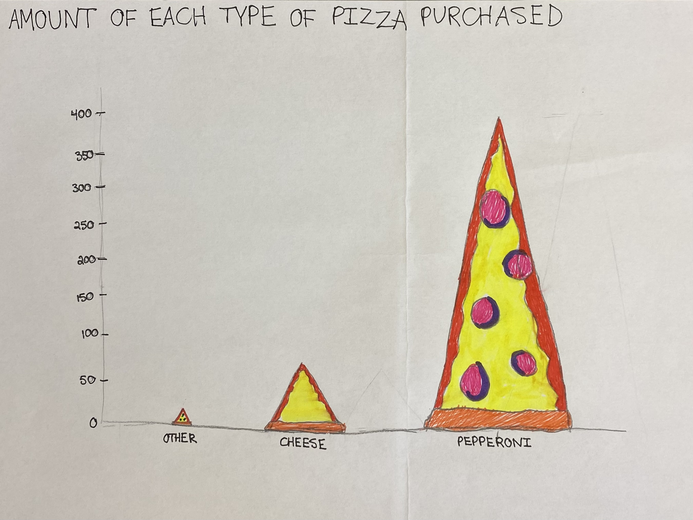

Rape counts in the Americas and types of pizza purchased
In my Datawrapper chart, I chose to organize my data with a column chart. I included all of the countries located in North, South, and Central America and measured the total counts of rape recorded in a year in each country. I used the color blue for the bars because it is a neutral color to look at. I highlighted the bar containing the counts for the United States because that was the area that I wanted to emphasize.
In my data visualization for the NYC pizza data, I chose to create a column graph with pizzas rather than bars because I felt that the theme was fitting. I drew each type of pizza on the chart based on the label, making sure to include the accurate types of toppings for each piece.
For the Datawrapper chart, I wish I had not highlighted the section with the United States because it is difficult to see the rest of the counts for the other countries. For the drawing, I wish I had made the scale a bit differently so that the slices of pizza are not so drastically different in size.
